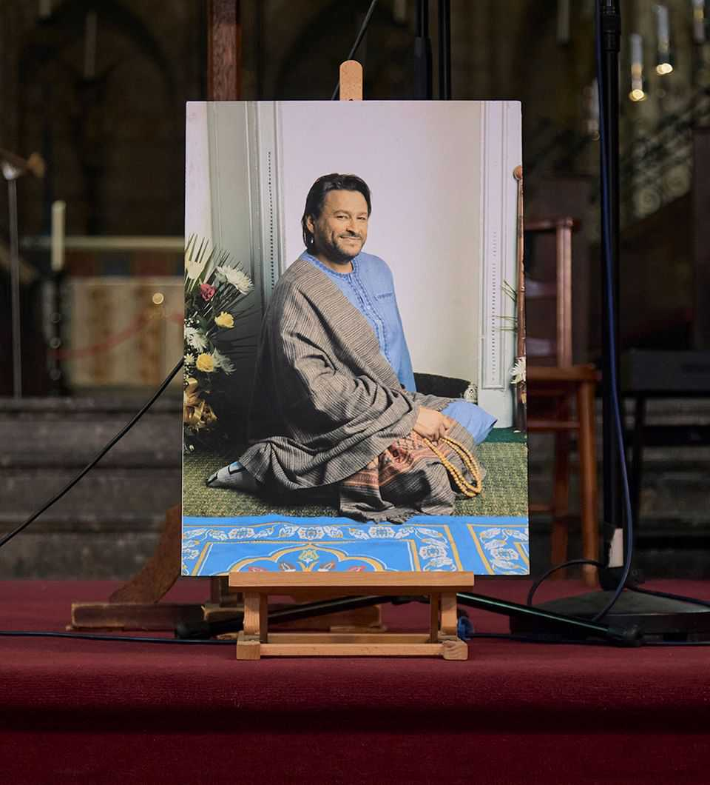
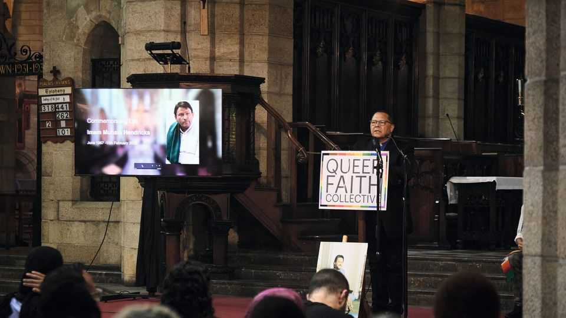
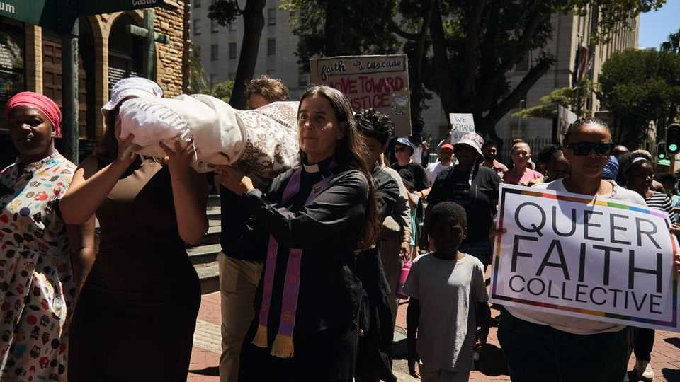
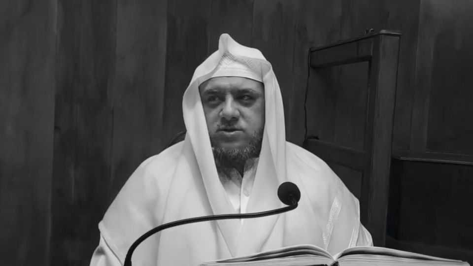
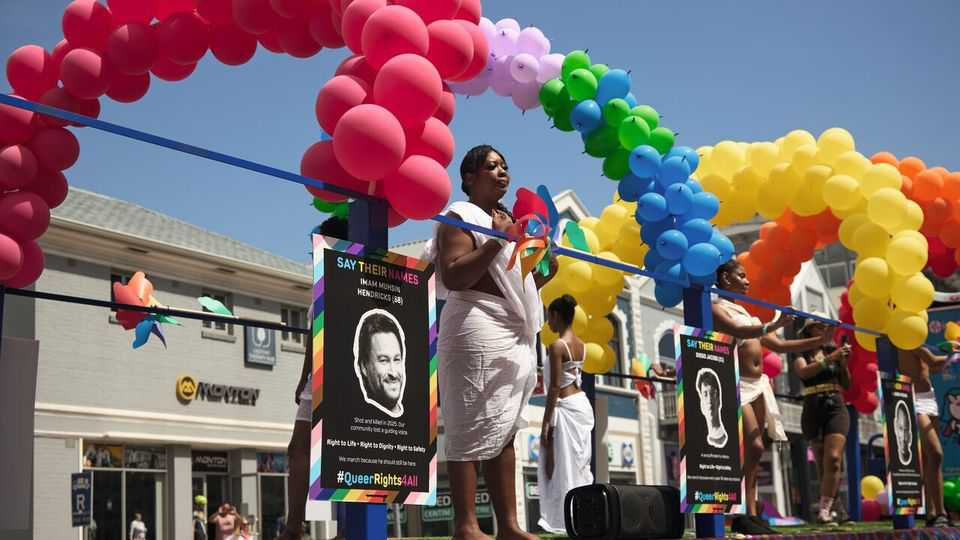

The assassination of the world’s only openly gay imam
Muhsin Hendricks knew that his liberal approach to Islam put his life in danger

Sep 10th 2026
Muhsin Hendricks, the world’s first openly gay imam, stepped out of a small bungalow in Bethelsdorp, a suburb of Gqeberha (formerly Port Elizabeth) on South Africa’s southern coast, just after 10am on Saturday February 15th 2025. He was 500 miles from home on a lightning trip hardly anyone knew about—and, he must have thought, safe.
Hendricks, from Cape Town, had flown the night before into Gqeberha, an hour by plane to the east, to officiate at two marriages. According to Hendricks’s office both weddings were interfaith, between a Muslim and a Hindu—many Muslims consider Hinduism to be sacrilegious idol worship. Neighbours in Bethelsdorp told me that the first union was also same-sex, between two women, which doctrinaire Muslims regard as a sin punishable by death. No local imam was prepared to sanctify either wedding, so the families had turned to Hendricks, 57, the founder of a gay-friendly mosque in Cape Town, where women were allowed to lead services and couples could be married regardless of faith or sexuality.
Hendricks cut an exuberant figure, a Muslim Jesus Christ Superstar in flowing white robes and red silk scarves, with the hair, beard and teeth of a Bee Gee. He had come out in 1996, divorcing the mother of his three children and going on to marry a Hindu man. His radical reinterpretations of the Quran—which he broadcast on TikTok, Instagram and YouTube every week—had won him a global following. But his showiness and unorthodox beliefs came at a price: threats against his life from Muslim hardliners which, in a country with one of the highest murder rates in the world, had to be taken seriously.
On home turf, Hendricks was unruffled. “Put your faith in God, and do what you need to do,” he said. He invited imams who called for his death to his house to examine his scriptural theses, and drove himself to gay-activist meetings on the Cape Flats, the tin-shack ganglands to the east of the city where many extremists were known to live.
But Hendricks did not know Bethelsdorp well. It was rough even by South African standards—in 2020 it had an attempted murder rate worse than any other municipality in the country, and 70 times that of London. Accordingly, Hendricks had accepted the families’ offer of a driver and a car for the 24 hours that he was going to be there.
Hendricks had begun the first wedding promptly at 9am, marrying the two women before family and friends at their home. The formalities over, he said his goodbyes and climbed into the back seat of a gold-coloured Volkswagen suv, which was waiting in the driveway to take him to the second ceremony, a few minutes away. The driver pulled into the street and a security camera captured what happened next.

As the Volkswagen pulled out of a turning circle, a silver Toyota Hilux with blacked-out windows came speeding up the wrong side of the road, blocking Hendricks’s car head-on. Hendricks’s driver braked, then tried to manoeuvre around the Hilux. In response, the other driver swerved in front of the Volkswagen a second time, forcing its driver to brake again.
The Toyota’s passenger door opened. A man jumped out. He was of medium height with a paunch, and wore a black cap, black sneakers, black joggers and a black hoodie over an untucked white t-shirt. The security-camera image of him is pixellated, but he was either white or fair-skinned, or wearing a white face-mask. In his right hand, he held a pistol.
When European colonisers ventured into north Africa in the 14th century, their plan was to counter Muslims menacing Christendom’s southern border. For privateers, there were additional commercial incentives: circumventing the grip that Middle Eastern Muslims held over the spice trade, and stealing the gold of African Muslims. Over the next six centuries, discovery and plunder escalated to conquest and enslavement. The fiercest defenders of Africa, in its north, west and east, were often jihadis tracing their lineage to Muhammad’s first disciples, who had settled in Ethiopia in 615AD. In the 18th and 19th centuries, two new literalist strains of Sunni Islam, Wahhabism and Salafism, emerged in Saudi Arabia and Egypt and spread around the globe. Their absolutism lent Africa’s Muslim rebels a resolve that may have hastened the end of imperialism. That heritage later encouraged Osama bin Laden to create a base for al-Qaeda in Sudan, and stage his first big attacks in Kenya and Tanzania. The same sense of unyielding righteousness still animates the continent’s Islamist militias today, from Mali to Mozambique.
South Africa was always different. Islam was introduced there in the 17th century by Dutch imperialists, when they tried to stem insurrection in their colonies in what are now Malaysia and Indonesia by deporting potential rebel leaders. Dozens of Sufi holy men and noblemen were exiled half a world away to Cape Colony, a waystation for the Dutch East India Company, along with thousands of Malay slaves who worked as labourers. Islam in northern and southern Africa may share a history of dissent, but they have traditionally been worlds apart in character. Wahhabis and Salafis were prescriptive, militant and segregationist, purifying their land by the sword. Sufis were tolerant, meditative and integrationist, turning their mosques in the Cape into sanctuaries for the oppressed of any colour or background. Tuan Guru, who arrived from the Spice Islands (now called the Malukus) in the 1740s and became the Cape’s first chief imam, preached patience. “Be of good heart,” he told his followers. “For one day, your liberty will be restored to you, and your descendants will live within a circle of kramats [Sufi tombs], safe from pestilence, flood and famine.”
For all their meekness, however, Cape Muslims were subversive. Every Friday under apartheid, says Shafiq Morton, author of “The Circle of the Saints”, a history of the kramats, “the face of every nation in the world” gathered for prayer at mosques across the country, in hushed defiance of the regime. Cape Muslim activists such as Ebrahim Rasool, jailed under apartheid and later premier of the Western Cape, one of South Africa’s provinces, founded the Call of Islam, a group that staged mass rallies in the townships alongside Nelson Mandela’s African National Congress (anc). The Cape Malay spirit of endurance was a constant on Robben Island, a prison colony off Cape Town where Tuan Guru was imprisoned for a dozen years and where Mandela later spent 18 years in jail.
The counter-culturalism of Cape Islam extended to sexuality. The apartheid regime considered homosexuality a sin and made it punishable by seven years in prison. The army tried to “cure” 900 gay conscripts with electric-shock treatment and chemical castration. In Sufi art and poetry, by contrast, homosexuality was a metaphor for divine love and spiritual transformation. Cape Malay culture reserved roles for gay men, such as hairdressing, dressmaking and entertaining. The icon of District Six—Cape Town’s most prominent Cape Malay area until it was made whites-only in 1966—was Kewpie, a transgender hair stylist who held drag shows in her salon. Gay men, says Ziyaad, a gay Muslim activist from the Cape and one of Hendricks’s assistants, “were part of the community”.


When apartheid ended in 1994, Mandela tasked anc leaders, lawyers and activists, including Rasool, with drafting a new national constitution. The ambition, Rasool said, was to liberate all previously designated “second-class” citizens and bind them together in a unified Rainbow Nation. The final text of South Africa’s new founding document forbade discrimination on grounds of “race, gender, sex, pregnancy, marital status, ethnic or social origin, colour, sexual orientation, age, disability, religion, conscience, belief, culture, language and birth”. That made South Africa the first country in the world to recognise and protect gay rights in its constitution and Cape Town—a city which had been liberated to become the gay capital of Africa—as good a place as any for a 29-year-old Muslim scholar to come out as the world’s first gay imam.
Hendricks, who was born in Cape Town into a family of imams and scholars, had known he was gay from the age of five. Initially, he tried to suppress his feelings. He put aside dreams of a career in fashion design and moved to Karachi to study Arabic and Islamic jurisprudence. There he learned how orthodox Sunni Islam interpreted the Quranic story of Sodom and Gomorrah—the city was destroyed as punishment for its men’s habit of raping passing male travellers—as a blanket prohibition on homosexuality. “I thought, ‘OK, this is what God thinks of me,’” Hendricks told “A Jihad for Love”, a documentary about gay Muslims broadcast in 2007. “I decided that maybe I should try to get married to a woman.”
But his attraction to men persisted. In 1991, a week before his marriage, Hendricks confessed to his fiancée that he was gay. The couple decided to see if getting married and having a family would change him. But a few years later, Hendricks burst into tears after a male friend in Karachi moved away. “My wife said, ‘So were you in love with him?’ I said: ‘Yes. I was.’” Even then, the couple tried to stay together for the sake of their two daughters and one son.
After the family returned to South Africa in 1994, Hendricks was traumatised by the suicide of a gay Muslim friend, who was unable to reconcile his faith and sexuality. Two years later, in the grip of a crisis of his own, Hendricks moved into the stables on a friend’s farm outside Cape Town and vowed not to emerge until God showed him a way forward. He stayed there for 80 days, eating and drinking sparingly. Deep in meditation one night, he saw a vision of his father, who told him to accept himself. “One morning, I just woke up, and I decided, ‘OK, I’m done fasting. I’m coming out,’” recalled Hendricks in “The Radical”, a documentary made about his life in 2022.
Hendricks emerged with a solution that squared his sexuality with his faith. Every Muslim acknowledged Allah as the author of all Creation. Every Muslim also believed that Allah didn’t make mistakes. It followed, Hendricks argued, that Allah would wish gay men and women to live authentically; Allah would love them as they were because he is “the most compassionate, most merciful”. The verses on Sodom and Gomorrah were a condemnation of rape rather than an injunction against all homosexuality, Hendricks said.
Hendricks’s arguments carried weight because he was a scholar. His reasoning also spoke to what many gay Muslims felt to be true. To Sanah Ahsan, a British poet and psychologist who identifies as a queer Muslim and became a member of Hendricks’s congregation, the idea that there was “only this portion of people worthy of God’s love” had always seemed implausible. “No one is outside that love,” said Ahsan.
Still, even the most tolerant Cape Malay clerics regarded homosexuality as a sin. Days after Hendricks came out, his fellow imams expelled him from the madrasa at which he taught. Though he was supported by his ex-wife and children, much of his wider family also shunned him. “Family members would say, ‘Your Dad’s going to be stoned to death. You can’t be around him,’” says his eldest daughter, Batul, in “The Radical”.

It was then that Hendricks decided to set up his own mosque. He called the place the Inner Circle or, more formally, al-Fitrah—Arabic for the state of innocence at birth. Hendricks held prayers every Friday and, in an experiment unique in Islam, ran courses on how to reconcile religion with one’s sexual inclination. Ziyaad was among his dozen or so original congregants. “I was so confused, so disheartened by the verses on Sodom and Gomorrah,” he told me. But with Hendricks, he said, he found his “safe space”.
In those early days, al-Fitrah was little more than a fringe operation for troubled souls, some of whom attended as much for Hendricks’s free home-cooked biryani as any spiritual nourishment. The word from Cape Muslim leaders was that if Hendricks and his followers kept to themselves and didn’t publicly challenge the orthodoxy, there wouldn’t be a problem. Perhaps the only Muslim leader paying close attention to Hendricks was another radical, also cast out by Cape Islam, who was setting up his own community just a few streets away.
Jameel Adams was born a decade after Hendricks in 1977, in Mitchell’s Plain, a part of the Cape Flats where thousands of Black and Coloured people (the South African term for mixed-race, indigenous Khoi and San, and those of south and South-East Asian descent) were forcibly resettled under apartheid. Like Hendricks, Adams came from a line of preachers. He also studied Islam in Cape Town, then headed overseas for further instruction (in Adams’s case, to Yemen). On his return in 2002, Adams, again like Hendricks, found himself “unsettled” by traditional Cape Islam. He joined, then left, two Islamist organisations in quick succession: the Tablighi Jamaat, a strict Sunni movement, and People Against Gangsterism and Drugs (pagad), a vigilante group in the Cape Flats, which lynched gang bosses and bombed gay nightclubs and Western restaurant chains in Cape Town in the late 1990s and early 2000s. (Adams did not reply to requests for an interview for this article.)
For Adams, even pagad wasn’t extreme enough. “He rejected them all,” wrote Yunus Dumbe and Abdulkader Tayob, two academics who interviewed him in 2008 as part of a project into Salafism’s growth in the Cape. “In his view, all other religious groups and movements had deviated from the true path.” Adams saw himself as a missionary, the researchers wrote, “on a path to ‘purify’ Islam in Cape Town and South Africa”. Barred from at least one Cape Town mosque for his virulence, he installed himself in a prayer room in the suburb of Wynberg in the early 2000s, within walking distance of Hendricks’s mosque, from where he issued stinging criticisms of Tuan Guru, kramat pilgrims and the Cape’s Muslim leaders.
Over the next three decades Hendricks and Adams became two of the most prominent Muslim voices in South Africa. The controversy around the men meant they continued to draw only a few dozen worshippers in person. But online was a different story.
Hendricks catapulted himself to global fame when he began posting videos about his beliefs on social media. He broadened his appeal by declaring his mosque a haven for people from any sex or faith, from Islam to African spiritualism. A banner from his window in Wynberg declared the Inner Circle to be “The People’s Mosque”. In 2021 he helped form the Queer Faith Collective, a body that brought together leaders from across Cape Town’s gay and religious communities. Among them, Hendricks was the undisputed star. “Talk about flamboyant,” said Reverend Nima Taylor, former Buddhist nun, unitarian minister and Queer Faith Collective co-founder. “The big banner. The pamphlets. We were all chasing his awesomeness.”
A few streets away, Adams’s practice of releasing the most reproachful extracts from his sermons online was also winning him thousands of followers around the world. He was broadcasting at a time when Africa was experiencing a wave of socially conservative, anti-Western, anti-gay sentiment funded and encouraged by evangelical Christians, and Salafis and Wahhabis from the Middle East. Adams attracted support from Wahhabi groups, which allowed him to open offices for his foundation, Ahlus-Sunnah, in Mitchell’s Plain, and satellite operations in several South African cities, including Gqeberha.
The Cape’s best-known imams took very different approaches to their fellow Muslims. Hendricks was theatrical, but presented himself as fallible, and his faith as an endless struggle to please God. He ministered to all religions, sought compromise and gladly met his opponents. (He gave up in-person scriptural debates when a Salafi preacher he invited over informed him that the only debate over gays in Islam was “how that person should be killed”.)
Adams dressed with puritan drabness, and presented himself as without fault but surrounded by sin. He tolerated no debate, and delivered an endless stream of judgments and denunciations. He described as “poison” other Muslim sects, those who trusted science over faith, gossips and people who observed incorrect etiquette on their way to the mosque. He reserved a special fury for interfaith and same-sex relationships. Muslims who allowed their daughters to marry Hindus (whom he referred to as kaafir muskrik, or “cursed pagans”) were mudhiel (disgracers) and murtad (apostates). Gay people were even worse. “Islam will never, ever make an allowance for [their] filthy…insanity,” he said.
Given Cape Islam’s tradition of inclusion, one might have expected the Muslim establishment to rebuke Adams. In fact, its members said nothing. But they slammed Hendricks. In 2006, when Hendricks married his Hindu boyfriend in a ceremony conducted by a woman, Cape Muslim leaders said they were triply insulted. After “The Radical” aired in 2022, the Muslim Judicial Council of South Africa issued a fatwa, condemning Hendricks and gay Muslims as apostates. Not to be outdone, al-Jama-ah, an Islamic political party, began a campaign protesting against what it perceived to be the alarming influence of gay people on public life.
The new intolerance of South African Islam reflected the spread of Salafism and Wahhabism. But it is also true that Adams’s bigotry found a ready audience in South Africa. The optimism of the Mandela years gave way to disillusion. The end of apartheid is now taken for granted, and South Africans complain about crime, corruption, shoddy public services and persistent inequality. Some search for scapegoats, encouraged by incendiary politicians. Mobs attack and kill dozens of immigrants from other African nations every year. According to gay activists, ten gay men and women have been publicly lynched in the past few years, though the true toll is almost certainly higher.

By the 2020s Hendricks was cast as part of the problem. “The murders and the rapes and lgbtqi+…why do you think all these things are happening?” asked al-Jama-ah’s spokesperson, Shameemah Salie, in a tv interview in 2023. Because, she said, “we are living in Sodom and Gomorrah.” Hendricks’s daughter, Batul, told “The Radical” that when Hendricks left the house each day, it was like he was “going to war”. One difficulty, paradoxically, was Hendricks’s persuasiveness. “When you challenge people to debate, and they’re not confident,” said Morton, the historian, “then you’re going to create a very adverse response.”
With hindsight, some of Hendricks’s friends believe he became complacent. “There was maybe some ease, and not taking precautions,” said Ahsan, the British poet. “Because you’ve been out and working in Cape Town so publicly for so many years.” But it was also true that Hendricks had long ago passed from fear to acceptance of his fate. Jacqui Benson-Mabombo, a Jewish activist and another co-founder of the Queer Faith Collective, said that as Hendricks’s fame grew, he found himself constantly having to “grapple with what happens if something happens to him”. As a result, said Benson-Mabombo, he was at “far greater peace than most people” with the thought of his own mortality. Even though part of Hendricks’s daily prayer was a plea that he wouldn’t “die at the hands of ignorant people”, he told the makers of “The Radical”, that “the need to be authentic [is] greater than the fear to die.” Benson-Mabombo said Hendricks accepted he was “a conduit, a channel” for a mission that would almost certainly outlive him. “He could have stopped,” Benson-Mabombo said. “Most people would have. And we would all have said, ‘That’s understandable.’ But he didn’t. He kept going. He got louder.”
As the gunman approached, Hendricks’s driver tried to back up. But the shooter was quicker. He jogged the eight steps to the Volkswagen’s right rear door, bringing his left hand in front of him as he moved, so that both hands were cupped around the pistol butt by the time he reached the car.
From a foot away, the gunman assumed a target shooter’s stance: left leg out in front, right leg braced underneath, both arms horizontal, hands on the grip. His posture—confident but relaxed—suggested training. A soldier, perhaps, or a policeman.
The man fired into the Volkswagen’s rear seat. The car’s window shattered. The assassin’s arms barely moved, absorbing the recoil with practised ease.
He fired a second time.
The driver of the Volkswagen tried to reverse, but found himself hemmed in by the kerb. Keeping his pistol trained on his target, the gunman pivoted around his forward foot to adjust to the new angle.
He fired a third time.
For a moment, the man examined his target through his gun sights. Satisfied, he lowered his pistol, ran back to the pickup, and jumped in. The pickup driver backed up sharply, then made a wide u-turn, bouncing across both verges, before speeding away. Just 21 seconds had passed between the pickup entering and leaving the cctv frame.
Hendricks was shot in broad daylight, by an assassin who appeared to be a professional. There was a possibility that the man was white or light-skinned. That unusual combination ought to have shrunk the pool of suspects. Many houses in Bethelsdorp have security cameras pointed at the street, which would have captured dozens of images of the killer and his driver. To spring their trap so effectively, they would probably also have had to wait hours for the right moment, and may have tailed Hendricks’s car from the airport the night before, throwing up the likelhood of hundreds of cctv recordings. Then there was the Toyota itself, an expensive model that looked new. Its licence plates would have allowed a detective to determine whether it was privately owned, rented or stolen. In addition, there was only a small number of people, at Hendricks’s office and among the families of the two couples, who were familiar with his travel plans.
Yet in the year and a half since Hendricks’s death, police investigators have made no progress. On one level, this is not unusual. Every day around 63 people are murdered in South Africa, but only a tenth of those crimes are ever solved. However, given Hendricks’s prominence and the plethora of leads, the lack of progress is striking. Gay-rights groups have protested that the inaction shows that, 32 years after apartheid, parts of the South African state still condone violence against outsiders. The accusation is understandable. On the road where Hendricks was shot, I could not find a single resident who had been interviewed by the police. No officer had collected cctv along the assassin’s possible routes, or traced the pickup. The only contact the Hendricks family have had with the police since August 2025 is a single phone call.
One person detectives should have talked to—about his advocacy of violence, if nothing else—was Jameel Adams. There is nothing to suggest that Adams had any role in or knowledge of the killing. Speaking on Mitchell’s Plain on February 20th 2025, five days after the killing, he also told his congregation it hadn’t been “permissible” to kill Hendricks under South African law. But he immediately qualified his statement by adding that, under sharia (Islamic law), Muslims were required to “execute” all gays in their ranks. “Execute him, right?” Adams said. “Must be executed.” Of Hendricks he said, now “that this person was killed…you are allowed to be happy. We are happy. We are free from him. May he get from Allah what he deserves.” That opinion was shared by Adams’s followers in Bethelsdorp. Ten minutes’ drive from where Hendricks was shot is the local base of Adams’s Ahlus-Sunnah foundation at ibn Taymiyyah mosque, a sparsely furnished room on the ground floor of a small shopping centre. There the resident imam, Zaahir Abrahams, told me that he believed Hendricks deserved to die, although it would have been preferable had he been executed by a sharia court. The killing had its benefits, Abrahams added, however it happened. “There is less noise around gay marriage and homosexuality in Islam,” he said.

To date, no police officer has spoken to Adams or anyone from his foundation. Sibonela Ncanana-Trower, the Hendricks family’s liaison with the police, said he was also unaware of any attempt to trace people who had posted comments online in support of Hendricks’s killing, or to track down the authors of a hit list circulated on social media of 200 supposedly gay Muslims. Nor, beyond taking statements from three staff members at Hendricks’s mosque, have police looked into an incident two months before Hendricks was killed, when a bearded stranger in orthodox dress showed up unexpectedly at Friday prayers, filmed the service on his phone, then left when staff challenged him. Hendricks, then at the centre of a fresh controversy for posting a video of a woman leading the Muslim call to prayer, was so unnerved that he confided to a friend: “I think they’re going to kill me.”
A possible explanation for the police’s lack of progress came this April and May in several phone calls and texts to Hendricks’s supporters from a man who introduced himself as Mr Ngalo from East London—a city 200 miles east of Gqeberha. Ngalo said he was friends with the killers. In one conversation, he identified them as black Xhosa speakers hired for “a lot of money” by South African Muslims—“Indian peoples”—whose names he did not know, but whose faces he would recognise. The killing was well planned, he added. “I knew [about] the murder of Muhsin Hendricks before he was gunned down,” he said. He wanted to help solve the murder for Hendricks’s family’s sake and was willing to give a statement—but only to the national police, he insisted, not local officers. “Because the police investigators know the killers,” he said. “Because the killers bribed the investigative officers on the case. These friends of mine…are working with corrupt officers, you understand? If I spoke to them here, my life will be in danger.”
On the first anniversary of Hendricks’s death this February, I asked the police about their lack of progress. Brigadier Nobuntu Gantana, a spokesman for the Eastern Cape police, said that “as this case remains an active and ongoing investigation, it would not be appropriate for us to conduct interviews or provide briefings” as the investigation might be jeopardised.
In August, I put the allegations of corruption to Gantana. She urged anyone making such accusations to do so “through the official channels”. She also disclosed that a “special detective task team” had taken over the murder investigation. In early July that team submitted a file to state prosecutors and had received additional instructions. “The investigation into the murder of Mr Muhsin Hendricks is ongoing,” she said. “No arrests have been made in this case to date.”
This February, exactly a year after Hendricks’s assassination, 70 people gathered for a memorial at St George’s Anglican Cathedral in Cape Town. It was from St George’s pulpit that Desmond Tutu, the city’s former archbishop, once railed against apartheid as a sin against a merciful and compassionate Christian God. Recalling those days in his address, Dean Terry Lester said that “it isn’t often that we get to celebrate the life of someone who…refused to cower in a corner or be silenced by threats. The world needs that kind of courage.”
South Africa in 2026 needs it more than most. After Hendricks’s murder, the Muslim Judicial Council condemned the killing “unequivocally” then immediately qualified its statement, noting his death “might have been motivated by hatred…due to his views on same-sex relationships” which were “incompatible with Islamic teachings”. Sensing widespread tacit approval of Hendricks’s murder, his family took down all his social-media posts and the landlord evicted his foundation. Without a home, his congregants stopped gathering. It was a measure of the fear spread by Hendricks’s assassination that, a year later, his memorial was held in a church. Even then, most of his former students and family, and every orthodox imam in the Cape, stayed away. Though a nearby mosque allowed a second, Islamic ceremony that day, its elders did so only on condition that the service was held in secret.
That stealth evokes an earlier era. Centuries ago, when Sufi leaders died in the Cape, their followers often buried them in secluded spots out of sight of the Dutch authorities—deep forest gulleys or windswept mountain ridges with lonely views of the ocean. As Morton writes, many kramats remained hidden for centuries, tended to by a handful of faithful. Only recently has their existence become known. New kramats are being added to this day, such as the tomb of a descendant of Muhammad who died in 2005 and is now buried behind Cape Town’s docks.
On the day that Hendricks was killed, his body was released to his family, transported to the Cape and buried in the earth of his ancestors as quickly as possible, in keeping with the rituals of his faith. In his tirade against Hendricks five days later, Adams instructed his followers: “He’s not [to be] washed, not shrouded, not prayed over, and he should not be buried with the Muslims.” To his relatives, Adams’s words were a threat: if the location of Hendricks’s grave became known, hardliners might desecrate it.
The family decided on a traditional Sufi solution. Each swore never to reveal Hendricks’s burial place. Instead, like his forefathers, the world’s first openly gay imam lies in secret, in peace, as his God made him. In a circle of saints. ■
Alex Perry’s latest book, “Blood Will Flow: The Murderous Business of Oil and Gas”, is out now.Photographs by Chris de Beer Procter